We introduce MA-EgoQA, the first benchmark for question answering over multiple long-horizon egocentric videos from embodied AI agents (1,741 questions, 5 categories, 6 agents, 7 days). We also propose EgoMAS, a training-free baseline using shared memory and dynamic retrieval that outperforms state-of-the-art frontier models like Gemini-2.5-Flash and GPT-5.
As embodied models become powerful, humans will collaborate with multiple embodied AI agents at their workplace or home in the future. To ensure better communication between human users and the multi-agent system, it is crucial to interpret incoming information from agents in parallel and refer to the appropriate context for each query.
In this work, we formally define the novel problem of understanding multiple long-horizon egocentric videos simultaneously collected from embodied agents. We introduce MultiAgent-EgoQA (MA-EgoQA), a benchmark designed to systematically evaluate existing models in this scenario. MA-EgoQA provides 1,741 questions unique to multiple egocentric streams, spanning five categories: social interaction, task coordination, theory-of-mind, temporal reasoning, and environmental interaction.
We further propose EgoMAS, a simple baseline that leverages shared memory across embodied agents and agent-wise dynamic retrieval. Comprehensive evaluation reveals that current approaches are unable to effectively handle multiple egocentric streams, highlighting the need for future advances in system-level understanding across agents.
MA-EgoQA is built on the EgoLife dataset, where 6 people lived together for 7 days wearing egocentric cameras. Every question requires information from more than two agents, making it fundamentally different from single-agent benchmarks.
Localizing and grounding casual conversations and affiliative behaviors across multiple video streams. Questions cover group behaviors, interpersonal engagements, and meaningful information exchanged during interactions.
How agents divide roles, sequence actions, and make decisions toward shared goals. Reflects practical importance of multi-agent collaboration and task planning.
Reasoning about mental states — what an agent believed, misunderstood, or intended. Requires diverse perspectives to capture contextual cues and infer latent cognitive states. The hardest category.
Aligning timelines across egocentric streams. Includes concurrency (what was each agent doing simultaneously?) and comparison (relative ordering of events across agents).
Tracking object usage distributed across multiple agents — frequency of use, first-time use, and which agent interacted most with shared objects in the environment.
| Dataset | # QA | Duration | Egocentric | Days-Long | Cross-Video | Theory-of-Mind |
|---|---|---|---|---|---|---|
| AssistQ | 531 | 115 sec | ✓ | ✗ | ✗ | ✗ |
| EgoTextVQA | 7,064 | 102 sec | ✓ | ✗ | ✗ | ✗ |
| EgoMemoria | 7,026 | 1–60 min | ✓ | ✗ | ✗ | ✗ |
| MuMA-ToM | 900 | 36 sec | ✗ | ✗ | ✗ | ✓ |
| EgoSchema | 5,063 | 180 sec | ✓ | ✗ | ✗ | ✗ |
| EgoThink | 700 | — | ✓ | ✗ | ✗ | ✓ |
| EgoToM | 1,039 | 300 sec | ✓ | ✗ | ✗ | ✓ |
| EgoLifeQA | 6,000 | 44 hour | ✓ | ✓ | ✗ | ✗ |
| CVBench | 1,000 | 106 sec | ✗ | ✗ | ✓ | ✗ |
| EgoExoLearn | 2,200 | 13 min | ✓ | ✗ | ✓ | ✗ |
| MA-EgoQA (Ours) | 1,741 | 266 hour | ✓ | ✓ | ✓ | ✓ |
MA-EgoQA is the only benchmark that simultaneously covers egocentric video, days-long duration, cross-video multi-agent reasoning, and theory-of-mind — making it uniquely challenging and comprehensive.
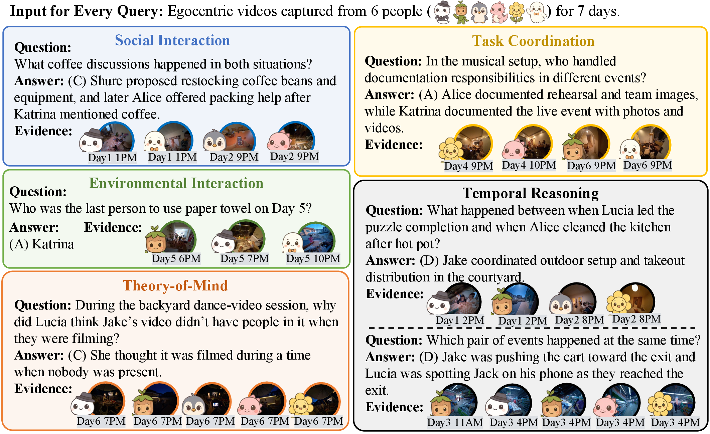
Representative QA examples from each category. Note that all questions are unique to multi-agent settings — they cannot be answered by looking at a single agent's video and often require reasoning across multiple timestamps.
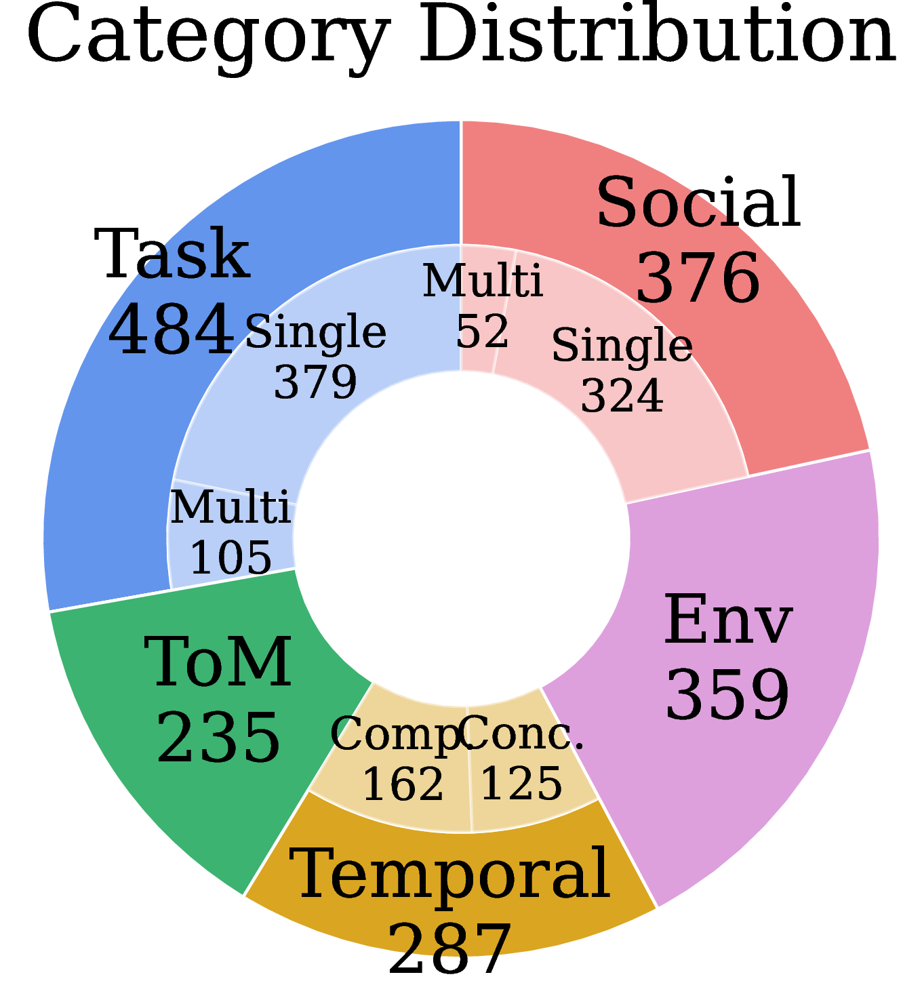
By Category
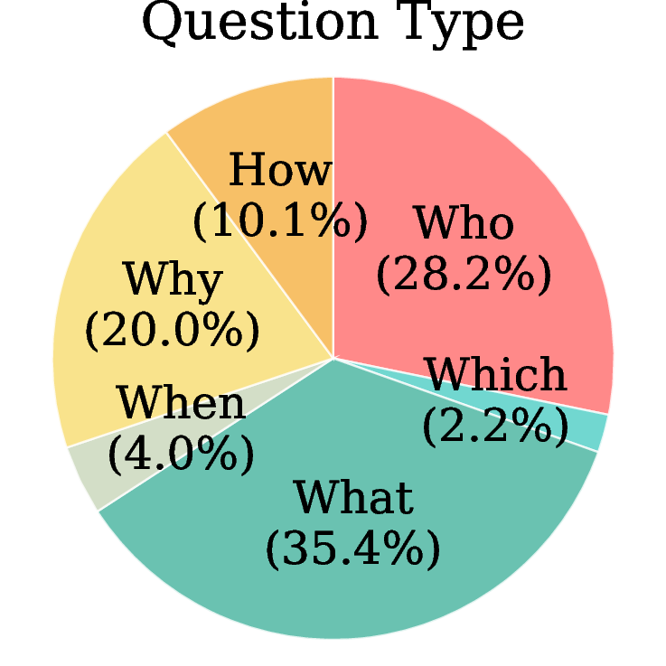
By Question Type
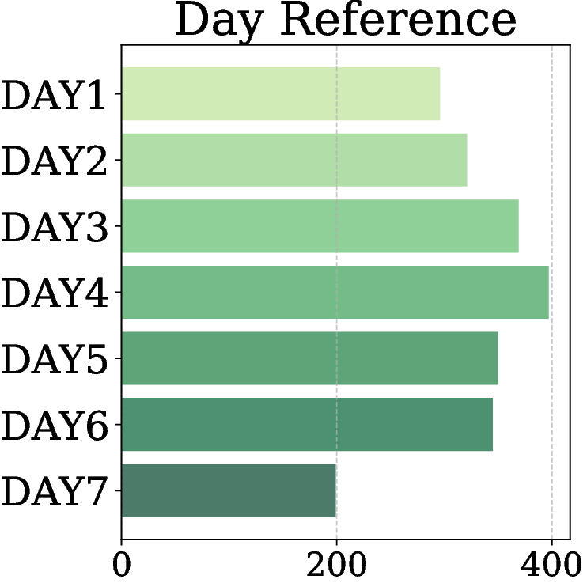
By Recording Day
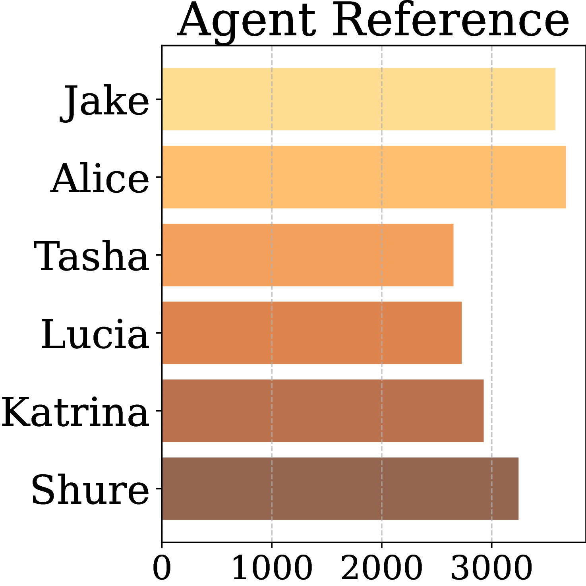
By Agent
MA-EgoQA questions are well-balanced across all five categories, seven recording days, six agents, and diverse question types (What / Who / Why / How / When / Which), ensuring comprehensive and unbiased evaluation.
MA-EgoQA uses a rigorous multi-stage pipeline to ensure question quality and difficulty: GPT-based generation → LLM filtering → human verification.
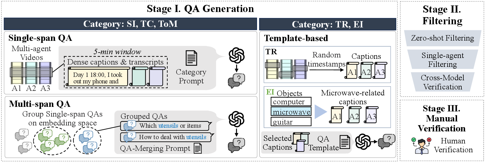
Three-stage data generation: (1) Single-span questions are generated from 5-minute video windows per agent. (2) Multi-span questions are created by grouping semantically similar single-span QA pairs. (3) Template-based questions are used for structured TR and EI categories.
Single-span (5-min windows), multi-span (grouped by semantic similarity), and template-based QA generation using GPT-4o and GPT-5. Generates 5 options per question (1 correct + 4 distractors).
Zero-shot filtering removes trivially answerable questions. Single-agent filtering removes questions solvable from one agent's memory. Cross-model validation uses Gemini-2.5-Flash and Claude-Sonnet-4 to catch biases.
4 human verifiers reviewed 3,436 candidates with full access to captions, transcripts, and videos. 1,741 high-quality samples passed all stages.
EgoMAS (Egocentric Multi-Agent System) is a training-free centralized baseline that tackles multi-agent egocentric reasoning through two key components: event-based shared memory and agent-wise dynamic retrieval.
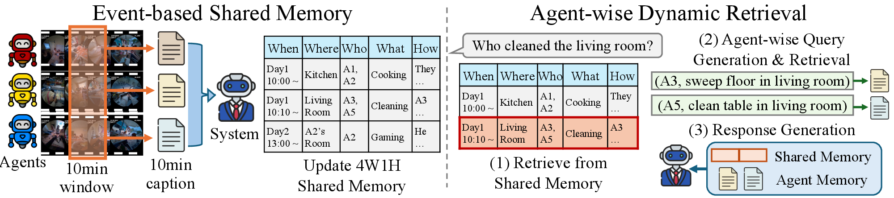
EgoMAS architecture. A centralized manager integrates 10-minute captions from all agents into a shared event-based memory using 4W1H (When, What, Where, Who, How) structured records. Given a query, EgoMAS first retrieves relevant system-level memories, then dynamically generates agent-specific sub-queries for fine-grained retrieval.
Every 10 minutes, each agent submits a caption of its observations. A centralized manager integrates these into a structured 4W1H record:
This structured format aligns agent perspectives while preserving critical details, enabling coherent global understanding across all agents.
Given a query, EgoMAS performs a two-stage retrieval:
This selective approach uses only 4–7k tokens of context per query — compared to 128k–1M tokens for non-retrieval baselines — while achieving better accuracy.
We evaluate 16 baselines across three categories (caption concat, frame concat, RAG-based) plus EgoMAS on MA-EgoQA. Random chance is 20% (5 options per question).
| Model | Context | SI | TC | ToM | TR | EI | Avg. |
|---|---|---|---|---|---|---|---|
| Random Chance | — | 20.0 | 20.0 | 20.0 | 20.0 | 20.0 | 20.0 |
| All Caption Concat Baselines | |||||||
| Gemini-2.5-Flash | 1M | 41.2 | 36.4 | 24.3 | 46.6 | 34.0 | 36.9 |
| GPT-5 | 272k | 36.2 | 33.9 | 22.6 | 39.7 | 38.7 | 34.8 |
| Qwen2.5-7B-1M | 500k | 27.1 | 28.9 | 20.9 | 24.0 | 26.2 | 26.1 |
| Qwen3-30b-a3b | 240k | 29.5 | 27.7 | 16.6 | 23.0 | 26.5 | 25.6 |
| gpt-oss-120b | 128k | 28.7 | 27.5 | 22.6 | 28.2 | 25.6 | 26.8 |
| Llama-3.1-Nemotron-8B | 1M | 20.5 | 22.9 | 20.4 | 22.7 | 21.2 | 21.7 |
| All Frame Concat Baselines | |||||||
| Qwen2.5-VL-7B | 128k | 26.3 | 26.5 | 21.3 | 22.2 | 25.1 | 25.2 |
| VideoChat-Flash | 32k | 23.7 | 25.0 | 20.0 | 24.4 | 20.7 | 23.1 |
| VideoXL-2 | 32k | 20.2 | 19.8 | 19.2 | 20.9 | 21.7 | 20.4 |
| RAG Baselines | |||||||
| BM25 + Qwen3VL-8B | 8.1k | 44.7 | 37.6 | 30.2 | 33.5 | 30.6 | 36.0 |
| WorldMM-8B | 4.1k | 29.3 | 34.5 | 21.7 | 25.1 | 22.6 | 27.6 |
| VideoRAG | 8.0k | 27.1 | 26.0 | 20.9 | 25.1 | 25.6 | 25.3 |
| EgoRAG | — | 22.3 | 21.1 | 18.3 | 15.3 | 18.9 | 19.6 |
| Ours (EgoMAS) | |||||||
| EgoMAS (Gemini-2.5-Flash) | 4.6k | 41.5 | 41.3 | 33.6 | 39.4 | 48.2 | 41.4 |
| EgoMAS (Qwen3VL-8B-Thinking) | 5.4k | 38.0 | 39.9 | 28.9 | 47.4 | 44.9 | 40.3 |
| EgoMAS (Qwen3VL-8B-Instruct) | 7.4k | 43.1 | 39.1 | 24.3 | 35.5 | 40.7 | 37.7 |
| EgoMAS (Qwen2.5VL-7B-Instruct) | 5.4k | 37.8 | 38.6 | 26.0 | 34.2 | 36.5 | 35.6 |
| Oracle (Upper Bound) | |||||||
| Oracle (Gemini-2.5-Flash) | — | 86.4 | 97.6 | 70.2 | 88.2 | 81.3 | 83.8 |
| Oracle (Qwen3VL-8B) | — | 76.9 | 81.0 | 57.0 | 77.4 | 69.9 | 74.0 |
Even the best model (Gemini-2.5-Flash with 1M context) achieves only 36.9% — barely above random with all captions concatenated.
Retrieval-based approaches consistently outperform non-retrieval methods, while using 100× less context (4–8k vs 128k–1M tokens).
EgoMAS with a small 8B model (Qwen3VL-8B-Thinking) surpasses both Gemini-2.5-Flash and GPT-5 baselines at 40.3%.
The large gap to Oracle (~83.8%) shows there is substantial room for improvement — this is a challenging open problem.
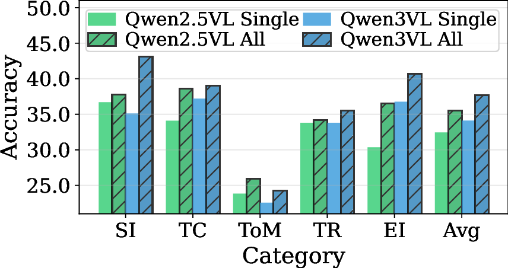
Restricting EgoMAS to a single agent's memory causes a substantial performance drop across all categories, confirming that MA-EgoQA genuinely requires integrating information from multiple agents — not just one.
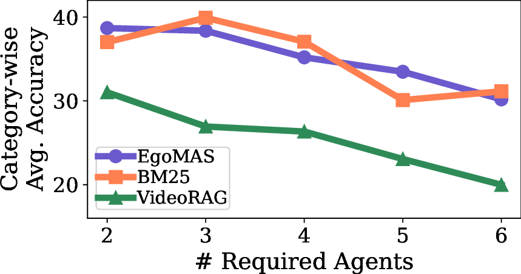
Performance consistently decreases as the number of agents required to answer a question increases. This highlights that current multi-agent knowledge fusion approaches remain limited — building coherent global understanding is an open challenge.
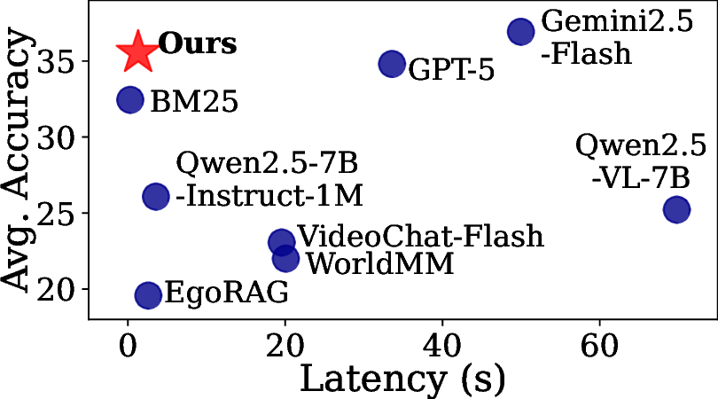
EgoMAS achieves the highest accuracy among retrieval-based models at only 1.3 seconds per query. Non-retrieval models incur orders-of-magnitude higher latency, making EgoMAS a practical choice for real-world deployment.
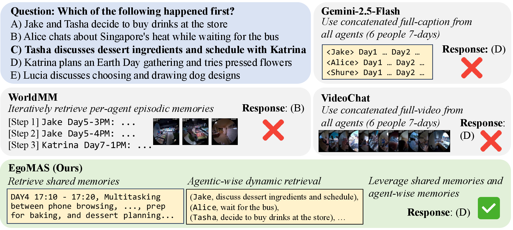
Gemini-2.5-Flash and VideoChat-Flash receive excessive information and fail to focus on relevant events. WorldMM retrieves memories but without cross-agent aggregation, it fails. EgoMAS uses shared memory to locate target events, performs dynamic retrieval for details, and answers correctly.
ToM consistently exhibits the lowest accuracy across all models. Unlike other categories where answers can be directly extracted from visual or textual cues, ToM requires inferring latent mental states — goals, beliefs, intentions — that are never explicitly stated. This corroborates prior work identifying ToM as exceptionally challenging due to its inherent ambiguity and the need for recursive mental-state reasoning.
Questions requiring context from multiple non-contiguous timestamps (multi-span) are substantially harder than single-span questions. This suggests that identifying and relating multiple events across 7 days of video requires much stronger retrieval and temporal reasoning capabilities than current systems possess.
If you find MA-EgoQA or EgoMAS useful in your research, please cite our paper:
@inproceedings{kim2026maegoqa,
title = {Multi-Agent Egocentric Video Question Answering},
author = {Kim, Kangsan},
booktitle = {European Conference on Computer Vision (ECCV)},
year = {2026},
url = {https://github.com/KangsanKim07/MA-EgoQA}
}